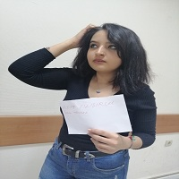

COTİGO ERGO SUM
1960 yılının kasım ayında şömineli sıcak bir odada ilerde üstüne simgesel anlamlar yükleyeceği ve yaşamının dönüm noktası olarak değerlendireceği ünlü rüyasını gördü
Meşhur "düşünüyorum öyleyse varım" ifadesini bu rüyanın ardından geliştirdi

KUŞKU ETMEK DÜŞÜNMEKTİR
Descartes kendi fikirlerini öncüllerininkinden ayrı tutar. “Ruhun Tutkuları”nın, bugün “duygu” diye adlandırdıklarımızın eski modern versiyonunun bilimsel incelemesinin, giriş kısmında bu konuda daha önce kimse yazmamış gibi yazacağını söyleyecek kadar ileri gider. |
|
DÜŞÜNÜYORUM |
|
|  | |
ÖYLEYSE |
|
Felsefesinin birçok ögesi geç Aristotelesçilik, 16. Yüzyılın yeniden dirilmiş stoacılığı, içerisinde emsallerini gösterir. |
Descartes felsefesinde, ekollerden iki temel noktada farklılık gösterir: korporel maddenin durum ve şekil olarak ayrıldığı ve doğal fenomenlerde doğal veya ilahi herhangi bir uç nokta olduğu kanılarına karşı çıkar. |
|
VARIM |
|